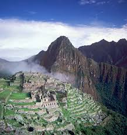

Machu Picchu is a 15th-century Incan citadel located high in the Andes Mountains of Peru. It is known for its dry-stone construction technique.

Built around 1450 during the reign of Emperor Pachacuti, it was later abandoned during the Spanish conquest.